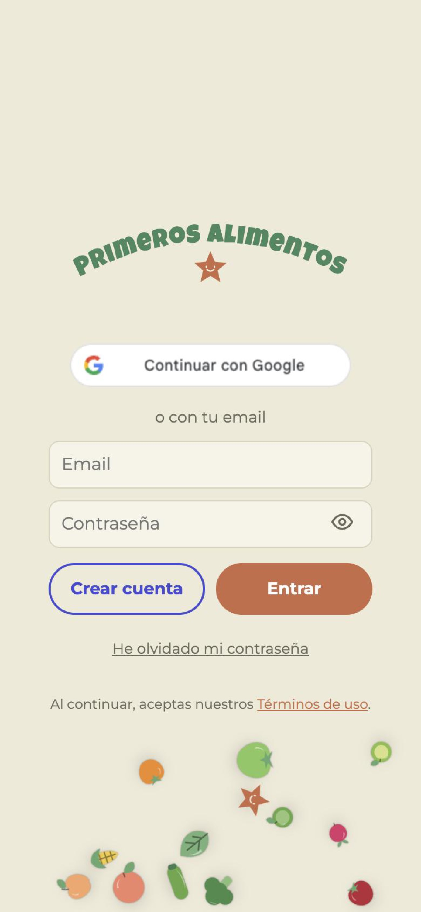
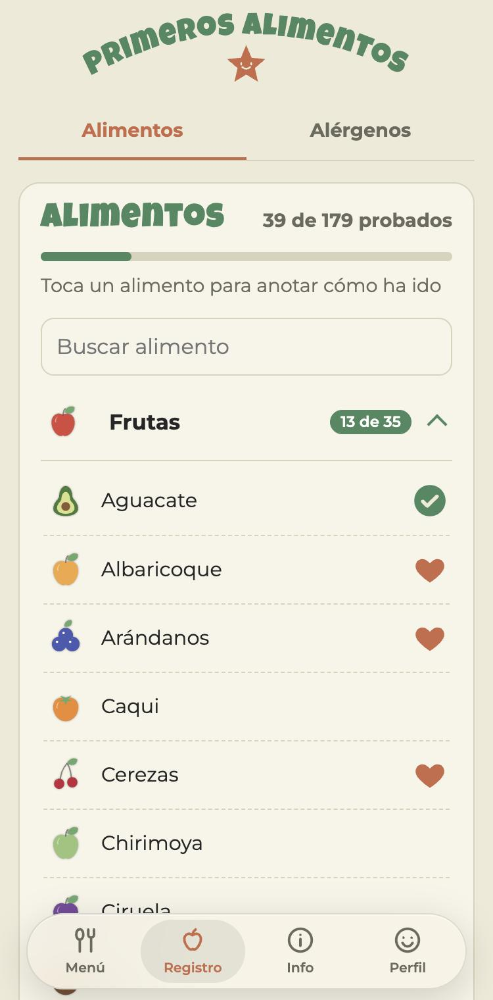
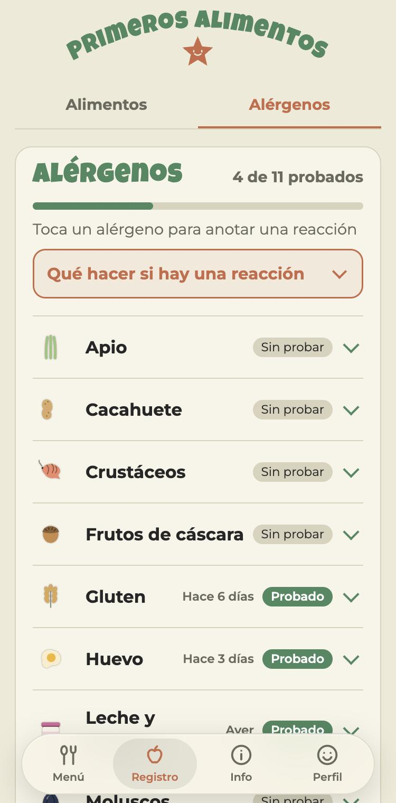
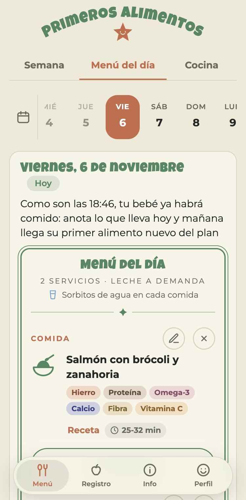
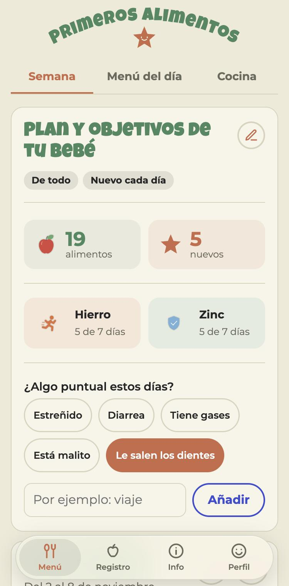

Primeros Alimentos
A meal-planning app for baby-led weaning. Parents log the foods their baby has tried and get a weekly plan to keep introducing new ones, based on Spanish pediatric guidelines.

At a glance
The problem
Weaning apps tell parents about foods, but don't help them plan what to give their baby this week.
My role
Designer and builder: product strategy, UX/UI, brand, shipping the web, iOS and Android apps, and running user testing.
Impact
Live on TestFlight and Google Play, with a 2-week test running with 12 mums. Feature and business model decisions will come from the results.
Skills
Tools
Claude, TestFlight, Google Play Console, Firebase
Outcomes
179
foods across 8 categories
11
allergens tracked, with what to do if there's a reaction
3
platforms: App Store, Google Play and web
12
mums testing it for 2 weeks on iOS and Android
Context
When my son started eating solids, I tried the popular apps like Solid Starts and BLW Ideas. They're great food encyclopedias, but they didn't help with the question I had every single day: what do I give him this week?
So I designed and built my own app around planning, not just information.
What parents need
Being the user myself, and talking to other parents, a few needs kept coming up:
- A plan, not a library. Parents know they should introduce new foods. What they need is someone to plan it with them.
- Memory. Which foods has the baby tried, how were they prepared, and how did it go?
- Calm guidance on allergens. Clear steps on what to introduce and what to do if there's a reaction.
- Room for real life. Teething, a cold or a trip changes what a baby will eat, so the plan has to adapt.
What I designed
- Food tracker. 179 foods in 8 categories, with search. Tap a food to log how it went.
- Allergen tracker. The 11 main allergens, with a clear "what to do if there's a reaction" guide always at hand.
- Weekly plan. Parents set the diet, how often to introduce a new food, textures, whether they freeze, meals per day and goals. The app generates the week and the menu of the day, and tracks key nutrients like iron and zinc.
- Adapts to the moment. One tap for things like teething, constipation or being unwell, so the plan adjusts.
- Accounts. Sign in with Google or email so progress is saved and works across devices.
The look is warm and playful, with illustrated food icons and a friendly display font, so a slightly stressful topic feels lighter. All guidance follows the Spanish Association of Pediatrics (AEP) recommendations, with a clear note that it doesn't replace the pediatrician.

Sign in with Google or email

Food tracker

Allergen tracker
Testing with real users
The app is already on iOS (TestFlight) and Google Play, and I'm currently running a 2-week test with real users: 12 mums aged 32 to 40, with babies between 6 and 15 months old, using it in their daily routine on iPhone and Android.
I also run usability sessions with product designer friends without kids, who catch the friction parents are too tired to notice. Feedback comes in through the stores and direct conversations, and I ship changes as I go.

Daily menu

Weekly plan and goals
What's next
- Finish the 2-week test and turn the findings into the next round of changes
- Public launch on the App Store and Google Play
- Add real food photos, shot while making recipe videos for social media
- Decide which features stay, which go and what's missing, based on what the test shows
- Figure out the business model
Next project
Augmented Culture →